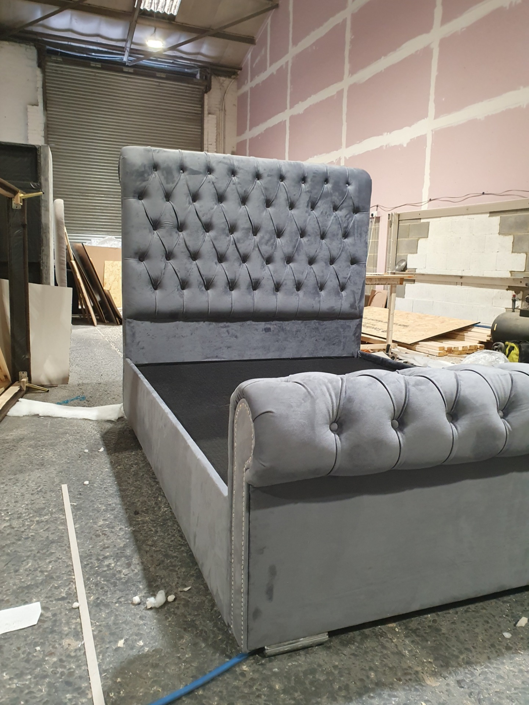

Retapițare Mobilă Targu MuresTe-ai atașat de o canapea veche, un fotoliu moștenit sau un set de scaune care nu se mai potrivesc decorului actual, dar care au o structură solidă? Nu le arunca! La Vali Handyman în Targu Mures, oferim servicii complete și p...
Citeste mai mult

Serviciu Profesional de Montaj Mobilă Targu MuresAi achiziționat mobilier nou și te simți copleșit de instrucțiunile complicate sau de multitudinea de piese? Echipa Vali Handyman îți oferă un serviciu rapid, eficient și profesional de montaj mobilă în Tar...
Citeste mai mult
Mobilierul joacă un rol esențial în confortul și estetica oricărei locuințe sau birou. Fie că este vorba de o piesă veche de familie cu valoare sentimentală, un scaun șubred sau un dulap care nu se mai închide corect, echipa Vali Handyman este aici pentru...
Citeste mai mult